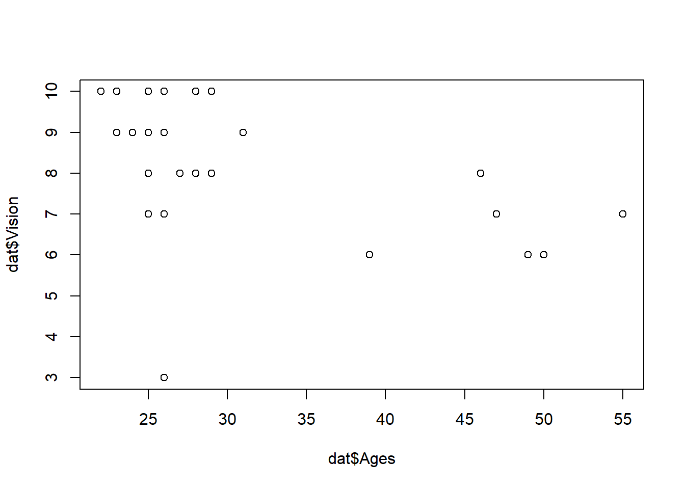
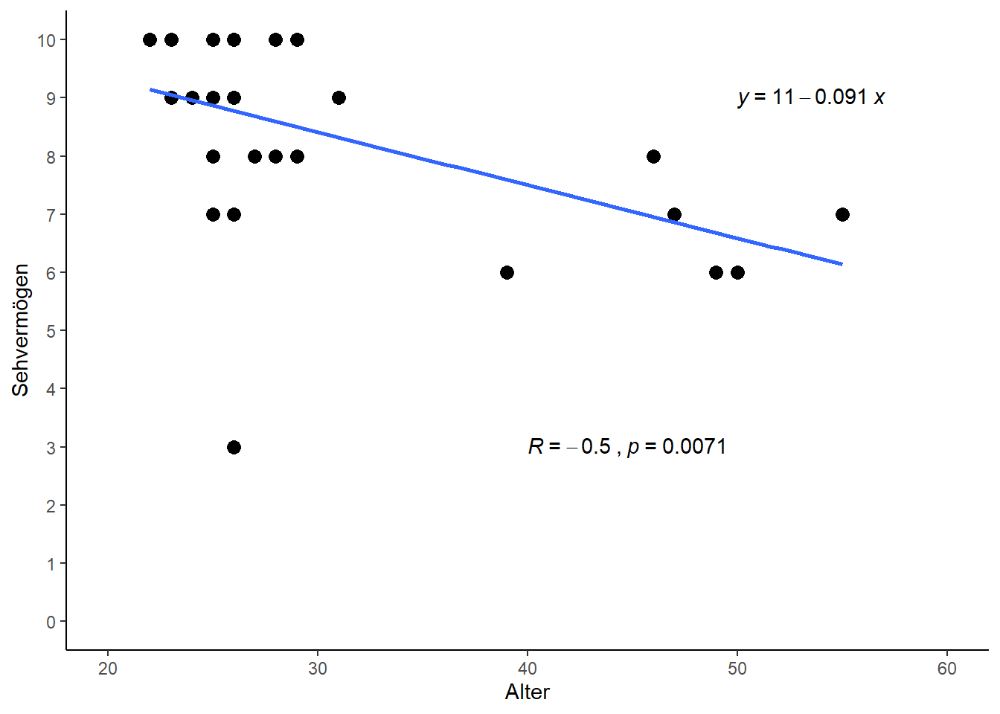
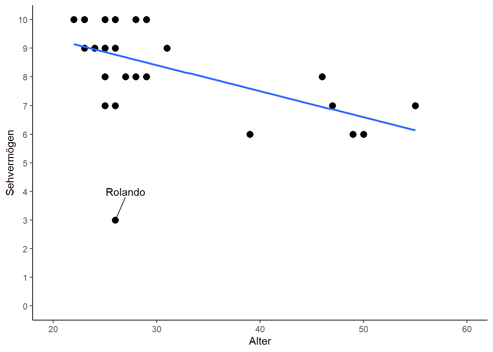
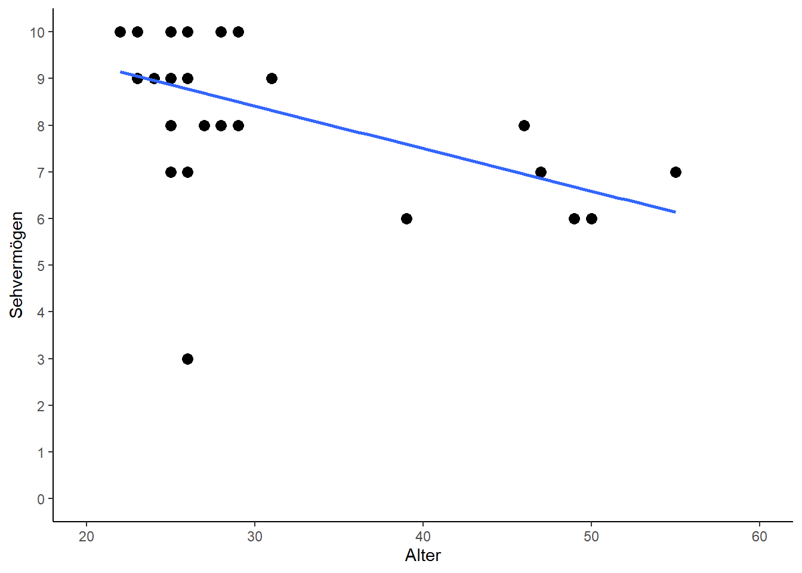
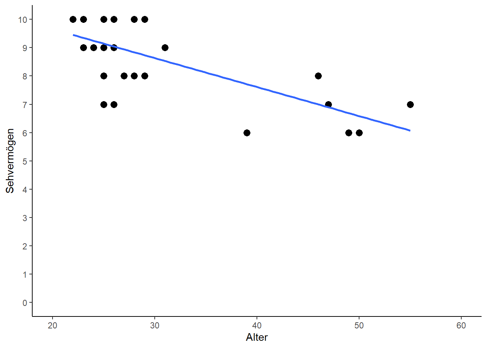
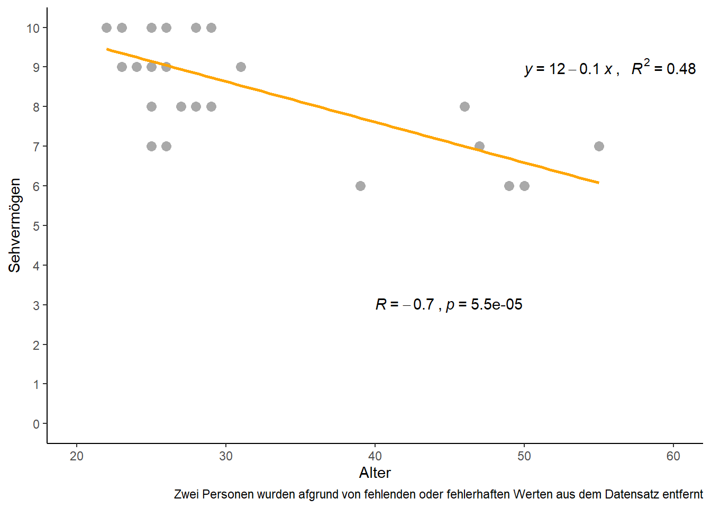

In diesem Beispiel wurden Name, Alter, Geschlecht und Sehvermögen (auf einer Skala von 1 bis 10) von ingsesamt 29 Personen aufgenommen. Wir wollen so tun als hätten wir selbst den Datensatz erhoben.
head(dat) # Erste Zeilen des Datensatzes## Person Ages Gender Vision
## 1: Andrés 25 M 10
## 2: Anja 29 F 10
## 3: Armando 31 M 9
## 4: Carlos 25 M 8
## 5: Cristina 23 F 10
## 6: Delfa 39 F 6str(dat) # Struktur des Datensatzes## Classes 'data.table' and 'data.frame': 29 obs. of 4 variables:
## $ Person: Factor w/ 28 levels "André"..
## $ Ages : int 25 29 31 25 23 39 28 N..
## $ Gender: Factor w/ 2 levels "F","M":..
## $ Vision: int 10 10 9 8 10 6 8 NA 9 ..
## - attr(*, ".internal.selfref")=<exter..Genau wie im Alkohol-Beispiel könnten wir nun unterschiedliche Fragen an den Datensatz stellen, wie z.B. ob in dieser Stichprobe die Frauen oder Männer ein höheres Durchschnittsalter haben. Doch wieder wollen wir uns hier nur auf die zwei numerischen Variablen Ages und Vision beschränken und demnach fragen ob das Alter einer Person etwas mit dessen Sehvermögen zu tun hat. Ebenfalls analog zum Alkohol-Beispiel soll die Korrelation und eine Regressionsgerade geschätzt werden. Der Unterschied zum vorangegangenen Beispiel wird sich während der Analyse weiter unten zeigen.
Um ein Gefühl für die Daten zu bekommen, betrachten wir einige Kennzahlen zu den Daten, sowie einen Plot.
summary(dat[, c("Ages", "Vision")])## Ages Vision
## Min. :22.00 Min. : 3.000
## 1st Qu.:25.00 1st Qu.: 7.000
## Median :26.00 Median : 9.000
## Mean :30.61 Mean : 8.357
## 3rd Qu.:29.50 3rd Qu.:10.000
## Max. :55.00 Max. :10.000
## NA's :1 NA's :1plot(x=dat$Ages, y=dat$Vision)
Beim Betrachten des summary() Outputs fällt auf, dass es Fehlwerte (=NA) im Datensatz gibt. Wir prüfen diese indem wir uns die Datenzeile näher anschauen.
subset(dat, is.na(Ages)) # Zeige nur die Daten mit Fehlwert in der Ages-Splate## Person Ages Gender Vision
## 1: Enrique NA <NA> NAFür Enrique haben wir demnach keine weitere Angabe außer seinen Namen. In solch einem Fall würden wir nun versuchen uns zu erinnern warum das so ist und ob wir die Daten nicht doch noch nachträglich beschaffen könnten. Wenn uns aber beispielsweise einfällt, dass Enrique während der Datenaufnahme unerwartet abbrechen musste und wir ihn so schnell auch nicht wieder erreichen können, dann ist dieser Datenpunkt zumindest für diese Analyse komplett wertlos. Tatsächlich kann man sogar argumentieren, dass er verwirrt, da der Datensatz 29 Zeilen hat, in den Analysen aber nur 28 davon brauchbar sein werden. Wir entscheiden uns also in diesem Fall die Datenzeile deshalb sicherheitshalber zu löschen.
An dieser Stelle zeige ich gleich drei verschiedene Möglichkeiten alle Datenzeilen zu löschen, die Fehlwerte in der Ages Spalte haben (= die eine Zeile mit Enrqiue). Für mehr Infos zur zweiten und dritten Methode siehe das Kapitel mit weiteren Tipps zu R:
dat <- subset(dat, !is.na(Ages)) # Basis R
dat <- dat[!is.na(Ages)] # data.table
dat <- dat %>% subset(!is.na(Ages)) # dplyrnrow(dat) # Anzahl Zeilen nach der Löschung## [1] 28Nun können wir uns die Deskriptive genauer anschauen und stellen beim Betrachten des Plots fest, dass es scheinbar einen negativen Trend gibt: Mit zunehmendem Alter sinkt das Sehvermögen. Was man sich an diesem Punkt auch vergegenwärtigen sollte ist, dass die jüngste Person 22 und die älteste 55 Jahre alt ist. Das bedeutet für uns, dass all unsere Ergebnisse am Ende streng genommen nur für Personen in dieser Altersspanne gelten. Nähmen wir z.B. das später geschätzte Regressionsmodell um das Sehvermögen einer 4-jährigen Person zu vorherzusagen, dann würden wir “extrapolieren”, da dieses Alter klar außerhalb der Daten liegt, welche zur Bildung des Modells vorhanden waren. Solche Vorhersagen sind natürlich stets mit Vorsicht zu genießen.
Wie im vorangegangenen Kapitel wollen wir also Korrelation und Regression berechnen. Beim Betrachten des Plots oben können wir schon jetzt sagen, dass wir eine negative, wenn auch nicht ganz so starke Korrelation und eine negative Steigung erwarten:
cor <- cor.test(dat$Ages, dat$Vision) # Korrelation
cor##
## Pearson's product-moment correlation
##
## data: dat$Ages and dat$Vision
## t = -2.923, df = 26, p-value = 0.007089
## alternative hypothesis: true correlation is not equal to 0
## 95 percent confidence interval:
## -0.7341839 -0.1525579
## sample estimates:
## cor
## -0.4973289reg <- lm(data=dat, formula=Vision ~ Ages) # Regressionsmodell y = a + bx
summary(reg)##
## Call:
## lm(formula = Vision ~ Ages, data = dat)
##
## Residuals:
## Min 1Q Median 3Q Max
## -5.7763 -0.6167 0.1790 1.1327 1.4966
##
## Coefficients:
## Estimate Std. Error t value Pr(>|t|)
## (Intercept) 11.14199 0.99646 11.182 1.97e-11 ***
## Ages -0.09099 0.03113 -2.923 0.00709 **
## ---
## Signif. codes: 0 '***' 0.001 '**' 0.01 '*' 0.05 '.' 0.1 ' ' 1
##
## Residual standard error: 1.545 on 26 degrees of freedom
## Multiple R-squared: 0.2473, Adjusted R-squared: 0.2184
## F-statistic: 8.544 on 1 and 26 DF, p-value: 0.007089Und wir stellen beides wieder in einem Plot mit ggplot dar:
library(ggplot2) # Erzeugt Plot
library(ggpubr) # Zusätzlicher Befehl "stat_cor" und "stat_regline_equation" (siehe unten)ggplot(data=dat, aes(x=Ages, y=Vision)) + # Definiere Daten
geom_point(size=3) + # Scatter plot mit Punkten der Größe 3
scale_x_continuous(name="Alter", limits=c(20, 60), breaks=seq(20, 60, by=10)) + # x-Achse
scale_y_continuous(name="Sehvermögen", limits=c( 0, 10), breaks=seq( 0, 10, by=1)) + # y-Achse
theme_classic() + # Simple, klassische Formatierung
geom_smooth(method='lm', formula=y~x, se=FALSE) + # Füge Gerade ein
stat_regline_equation(label.x=50, label.y=9) + # Füge Gleichung ein
stat_cor(method="pearson", label.x=40, label.y=3) # Füge Korrelation mit p-Wert ein
An diesem Punkt könnte man das Beispiel als abgehakt ansehen. Es fällt aber auf, dass ein Punkt deutlich aus der Reihe tanzt - nämlich die Person mit Sehvermögen von 3. Diese Person hat das mit Abstand schlechteste Sehvermögen (das zweitschlechteste liegt bei 6) und hinzukommt, dass die Person auch noch zu den jungen Personen gehört, sodass dieser Wert komplett gegen den Trend der restlichen Daten geht.
In solch einem Fall sollte immer erst mehr über den Ausreißer in Erfahrung gebracht werden:
subset(dat, Vision<5) # Zeige nur Datenzeilen mit Vision < 5## Person Ages Gender Vision
## 1: Rolando 26 M 3Es handelt sich also um den 26-jährigen Mann namens Rolando. Hier eine Möglichkeit um ihn in ggplot mittels des packages ggrepel hervorzuheben. Im Code sieht man, dass nur die Punkte gekennzeichnet werden sollen, die eine Vision<5 haben, sodass nur Rolando gekennzeichnet wird.
library(ggrepel) # Zusätzlicher Befehl "geom_text_repel" (siehe unten)ggplot(data=dat, aes(x=Ages, y=Vision)) + # Definiere Daten
geom_point(size=3) + # Scatter plot mit Punkten der Größe 3
scale_x_continuous(name="Alter", limits=c(20, 60), breaks=seq(20, 60, by=10)) + # x-Achse
scale_y_continuous(name="Sehvermögen", limits=c( 0, 10), breaks=seq( 0, 10, by=1)) + # y-Achse
theme_classic() + # Simple, klassische Formatierung
geom_smooth(method='lm', formula=y~x, se=FALSE) + # Füge Gerade ein
geom_text_repel(data=dat[Vision<5], aes(label=Person), nudge_y=1, nudge_x=1) # Kennzeichne Rolando
Hätten wir die Daten selbst erhoben, würde wir nun versuchen uns an Rolando zu erinnern.
Option 1: Klingt komisch, ist aber so: Würden wir direkt jemanden mit dicken Brillengläsern vor Augen haben und uns erinnern, dass er überraschend schlecht gesehen hat, hätten wir den auffälligen Wert bestätigt. Wir würden nichts am Wert ändern und er würde weiterhin dem generellen Trend widersprechen, aber das ändert nichts daran, dass er die Wahrheit abbildet.
Option 2: Korrigiere den Fehler: Könnten wir uns allerdings an Rolando erinnern und wären uns ziemlich sicher, dass er eigentlich ein normales Sehrvermögen hatte, dann liegt ein Problem vor. Nicht selten kommt es vor, dass man sich z.B. bei der Dateneingabe vertippt und deshalb ein falscher Wert im Datensatz steht. Könnten wir nun zurück zu unseren schriftlichen Aufzeichnungen vom Tag der Datenerhebung gehen und dort Rolandos korrekten Wert für das Sehvermögen einsehen, so könnten wir nachträglich den Wert im Datensatz korrigieren und fortfahren.
Option 3: Lösche den Fehler: Es kann aber auch sein, dass wir uns wie bei Option 2 sicher sind, dass der Wert nicht bei 3 lag, wir aber keine Möglichkeit haben den korrekten Wert aufzutreiben. In solch einem Fall kann man sich dafür entscheiden den Wert zu löschen. Dann haben wir zwar weniger Daten, aber zumindest ist das Ergebnis nicht durch den offensichtlich falschen Wert verfälscht.
Das Löschen von Ausreißern aus einem Datensatz ist eine sensible Angelegenheit und sollte nicht leichtfertig und schon gar nicht heimlich durchgeführt werden. Leider kommt es vor, dass selbst Wissenschaftler mehr oder weniger subjektiv entscheiden welche Werte “schlichtweg nicht wahr sein können” und diese dann aus dem Datensatz entfernen ohne es in der Publikation zu vermerken. In manchen Fällen führt dies sogar dazu, dass das Ergebnis erst danach signifikant wird. Mehr dazu im Kapitel zum p(roblem)-Wert.
In diesem Beispiel wollen wir uns dazu entscheiden den Ausreißer zu löschen. Demnach entfernen wir Rolando aus dem Datensatz und führen beide Analysen nochmals durch. Wir speichern die Ergebnisse diesmal aber in neue R-Objekte, sodass wir die alten nicht überschreiben:
dat_noRolando <- subset(dat, Person!="Rolando") # Entferne Rolando
cor_noRolando <- cor.test(dat_noRolando$Ages, dat_noRolando$Vision) # Korrelation
reg_noRolando <- lm(data=dat_noRolando, formula=Vision ~ Ages) # Regressionsmodell y = a + bxcor # mit Rolando##
## Pearson's product-moment correlation
##
## data: dat$Ages and dat$Vision
## t = -2.923, df = 26, p-value = 0.007089
## alternative hypothesis: true correlation is not equal to 0
## 95 percent confidence interval:
## -0.7341839 -0.1525579
## sample estimates:
## cor
## -0.4973289cor_noRolando # ohne Rolando##
## Pearson's product-moment correlation
##
## data: dat_noRolando$Ages and dat_noRolando$Vision
## t = -4.8515, df = 25, p-value = 5.475e-05
## alternative hypothesis: true correlation is not equal to 0
## 95 percent confidence interval:
## -0.8511437 -0.4301958
## sample estimates:
## cor
## -0.6963674Die Korrelation ist natürlich auch ohne Rolando negativ, sie hat aber einen erheblichen Sprung gemacht. Vorher lag sie bei -0.5 und ohne Rolando bei -0.7. Der p-Wert war in diesem Beispiel zwar schon vorher signifikant, doch auch dieser wurde im rechten Output deutlich kleiner. Das ist erstaunlich, da wir nur eine einzige Beobachtung von 28 entfernt haben. Es wird also klar welchen Einfluss einzelne Ausreißer haben können.
summary(reg) # mit Rolando##
## Call:
## lm(formula = Vision ~ Ages, data = dat)
##
## Residuals:
## Min 1Q Median 3Q Max
## -5.7763 -0.6167 0.1790 1.1327 1.4966
##
## Coefficients:
## Estimate Std. Error t value Pr(>|t|)
## (Intercept) 11.14199 0.99646 11.182 1.97e-11 ***
## Ages -0.09099 0.03113 -2.923 0.00709 **
## ---
## Signif. codes: 0 '***' 0.001 '**' 0.01 '*' 0.05 '.' 0.1 ' ' 1
##
## Residual standard error: 1.545 on 26 degrees of freedom
## Multiple R-squared: 0.2473, Adjusted R-squared: 0.2184
## F-statistic: 8.544 on 1 and 26 DF, p-value: 0.007089summary(reg_noRolando) # ohne Rolando##
## Call:
## lm(formula = Vision ~ Ages, data = dat_noRolando)
##
## Residuals:
## Min 1Q Median 3Q Max
## -2.1466 -0.7145 0.1039 0.8534 1.2626
##
## Coefficients:
## Estimate Std. Error t value Pr(>|t|)
## (Intercept) 11.70395 0.67921 17.232 2.20e-15 ***
## Ages -0.10229 0.02109 -4.851 5.48e-05 ***
## ---
## Signif. codes: 0 '***' 0.001 '**' 0.01 '*' 0.05 '.' 0.1 ' ' 1
##
## Residual standard error: 1.042 on 25 degrees of freedom
## Multiple R-squared: 0.4849, Adjusted R-squared: 0.4643
## F-statistic: 23.54 on 1 and 25 DF, p-value: 5.475e-05Beim Vergleich der geschätzten Regressionsmodelle zeigt sich auf den ersten Blick kein so deutliches Bild wie bei der Korrelation: Der Schätzwert für die Achsenabschnitte änderte sich von 11.14 zu 11.7 und der der Steigung von -0.09 zu -0.1. Und tatsächlich muss man etwas genauer hinschauen wenn man die Geraden in Plots vergleicht:
# Mit Rolando
ggplot(data=dat,
aes(x=Ages, y=Vision)) +
geom_point(size=3) +
scale_x_continuous(name="Alter",
limits=c(20, 60),
breaks=seq(20, 60, by=10)) +
scale_y_continuous(name="Sehvermögen",
limits=c( 0, 10),
breaks=seq( 0, 10, by=1)) +
theme_classic() +
geom_smooth(method='lm', formula=y~x, se=F)
# Ohne Rolando
ggplot(data=dat_noRolando,
aes(x=Ages, y=Vision)) +
geom_point(size=3) +
scale_x_continuous(name="Alter",
limits=c(20, 60),
breaks=seq(20, 60, by=10)) +
scale_y_continuous(name="Sehvermögen",
limits=c( 0, 10),
breaks=seq( 0, 10, by=1)) +
theme_classic() +
geom_smooth(method='lm', formula=y~x, se=F)
Sicherlich ergibt es Sinn, dass die Gerade im Plot mit Rolando links etwas tiefer liegt - der Punkt von Rolando zieht sie quasi ein Stück weit zu sich. Insgesamt ist dieser Unterschied jedoch minimal. Es bleibt also die Frage wie jetzt zu bemessen ist, dass doch die Gerade ohne Rolando sehr viel besser zu der Gesamtheit aller Punkte passt, als die Gerade mit Rolando.
Dafür gibt es das Bestimmtheitsmaß \(R^2\) (auch Determinationskoeffizient), welches auch in der vorletzten Zeile des summary(reg) Outputs angegeben ist. Es gibt an, wie viel Streuung in den Daten durch ein vorliegendes lineares Regressionsmodell „erklärt“ werden kann. Demnach wird es in Prozent gemessen, kann also Werte zwischen 0% und 100% annehmen. Hier werden wir nun also fündig, dass auch bei der Regression der Rauswurf von Rolando zu einer erheblichen Verbesserung des Bestimmtheißtsmaßes geführt hat, da es mit Rolando nur bei 24.7 % lag und ohne Rolando auf 48.5 % anstieg.
Schließlich wollen wir den Plot zum Abschlus ohne Rolando und mit allen Ergebnissen erstellen:
ggplot(data=dat_noRolando, aes(x=Ages, y=Vision)) + # Definiere Daten
geom_point(size=3, color="darkgrey") + # Scatter plot mit grauen Punkten der Größe 3
scale_x_continuous(name="Alter", limits=c(20, 60), breaks=seq(20, 60, by=10)) + # x-Achse
scale_y_continuous(name="Sehvermögen", limits=c( 0, 10), breaks=seq( 0, 10, by=1)) + # y-Achse
theme_classic() + # Simple, klassische Formatierung
geom_smooth(method='lm', formula=y~x, se=FALSE, color="orange") + # Füge orange Gerade ein
stat_regline_equation(aes(label=paste(..eq.label.., ..rr.label.., sep = "~`,`~~~")),
label.x=50, label.y=9) + # Füge Gleichung inkl. R2 ein
stat_cor(method="pearson", label.x=40, label.y=3) + # Füge Korrelation mit p-Wert ein
labs(caption="Zwei Personen wurden afgrund von fehlenden oder fehlerhaften Werten aus dem Datensatz entfernt")